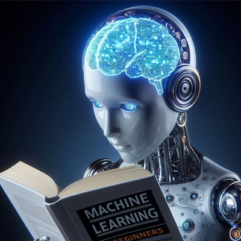
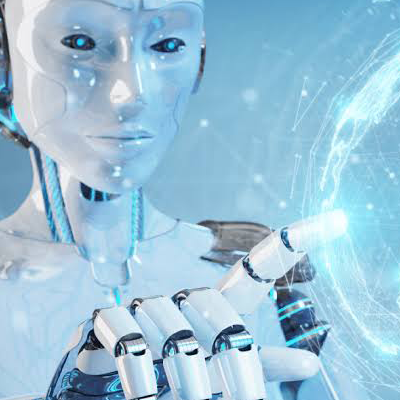
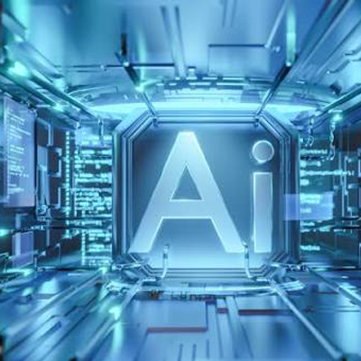
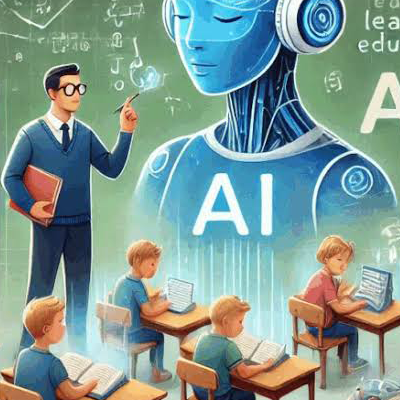

AI Idea Lab — จุดประกายไอเดียด้วย AI


ความคิดสร้างสรรค์เป็นจุดเริ่มต้นของทุกผลงาน ไม่ว่าจะเป็นโปสเตอร์ บทความ วิดีโอ งานนำเสนอ หรือคอนเทนต์สำหรับสื่อสังคมออนไลน์ แต่บางครั้งสิ่งที่ยากที่สุดไม่ใช่การลงมือทำ แต่คือการคิดว่า “จะทำอะไรดี” AI สามารถเข้ามาเป็นผู้ช่วยในการระดมความคิดและพัฒนาไอเดียให้กลายเป็นแนวทางที่ชัดเจนมากขึ้น ผู้ใช้งานสามารถบอก AI เพียงหัวข้อหรือปัญหาที่ต้องการแก้ไข จากนั้นให้ AI ช่วยเสนอแนวคิดหลายรูปแบบ


เปรียบเทียบข้อดีข้อเสีย หรือพัฒนาคอนเซ็ปต์ให้เหมาะกับกลุ่มเป้าหมาย เช่น หากต้องการทำโปสเตอร์ประชาสัมพันธ์กิจกรรมของโรงเรียน สามารถให้ AI ช่วยคิดแนวทางการออกแบบ สี สไตล์ ข้อความ และองค์ประกอบที่เหมาะสมได้ การใช้ AI เพื่อระดมความคิดไม่ได้หมายความว่าเราต้องนำทุกสิ่งที่ AI เสนอมาใช้ทั้งหมด แต่ควรนำแนวคิดเหล่านั้นมาเป็นจุดเริ่มต้น แล้วใช้ประสบการณ์และความคิดสร้างสรรค์ของเราในการคัดเลือกและปรับปรุง


หนึ่งในความสามารถที่โดดเด่นของ AI ในปัจจุบัน คือการสร้างภาพจากข้อความ ผู้ใช้งานสามารถอธิบายสิ่งที่ต้องการให้ AI สร้าง แล้วระบบสามารถเปลี่ยนคำอธิบายเหล่านั้นให้กลายเป็นภาพที่มีรายละเอียดตามคำสั่ง
more
วิดีโอเป็นหนึ่งในรูปแบบคอนเทนต์ที่ได้รับความนิยมอย่างมากในยุคดิจิทัล แต่การผลิตวิดีโอในรูปแบบเดิมอาจต้องใช้ทั้งเวลา อุปกรณ์ บุคลากร และทักษะหลายด้าน AI จึงเข้ามาช่วยลดขั้นตอนและทำให้การสร้างวิดีโอสามารถทำได้ง่ายขึ้น
more
วิดีโอเป็นหนึ่งในรูปแบบคอนเทนต์ที่ได้รับความนิยมอย่างมากในยุคดิจิทัล แต่การผลิตวิดีโอในรูปแบบเดิมอาจต้องใช้ทั้งเวลา อุปกรณ์ บุคลากร และทักษะหลายด้าน AI จึงเข้ามาช่วยลดขั้นตอนและทำให้การสร้างวิดีโอสามารถทำได้ง่ายขึ้น
more